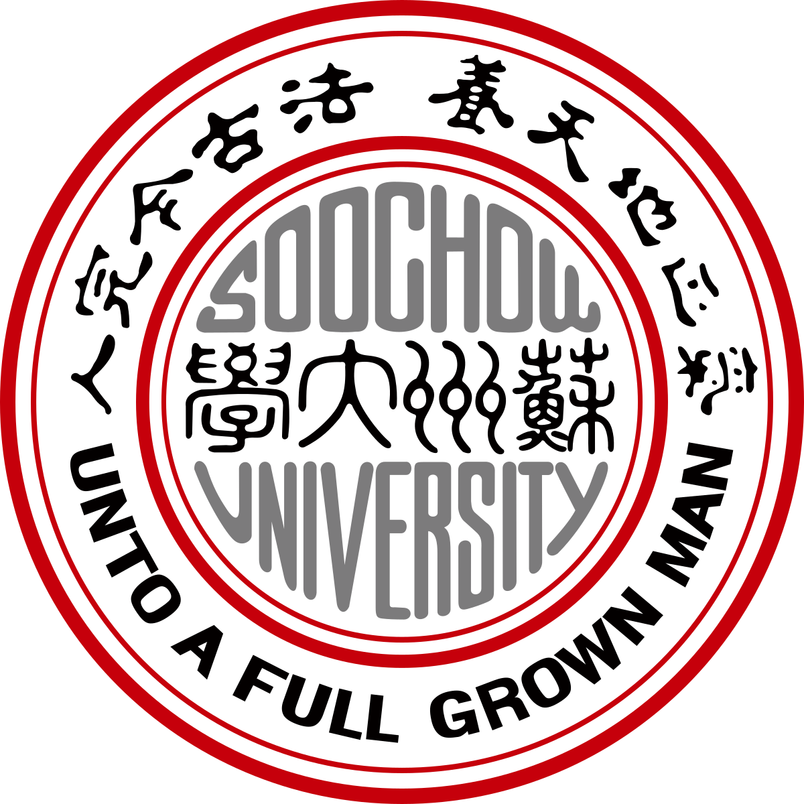

About Me
I am Wenchang Wang, currently a third-year master's student at Peking University, majoring in Journalism and Communication with a minor in Economics. My advisor is Assistant Professor Chen Zhuo.
My research focuses on political communication, primarily using computational methods to study political phenomena in online communities. My specific research interests include:
- User behavior following platform policy changes
- Off-topic discussion phenomena and causes in online communities
- Advanced multimodal data analysis and processing methods
I am currently applying for doctoral programs. My papers have been accepted at conferences including ICA, NCA, AEJMC, and IC²S².

Education
Peking University
M.A. in Journalism and Communication, HSBC Business School
Aug 2023 -- June 2026 | Shenzhen, Guangdong
University of Cologne
Exchange Student, Faculty of Management, Economics and Social Sciences
Oct 2024 -- Mar 2025 | Cologne, Germany
Specialized coursework in Economics as part of Peking University Minor program
Peking University
Minor in Economics, HSBC Business School
Aug 2023 -- June 2026 | Shenzhen, Guangdong
Including exchange study at University of Cologne, Germany

Soochow University
B.E. in Mechanical and Electronic Engineering
Sept 2017 -- June 2021 | Suzhou, Jiangsu
Awards
- Promising Student Paper, ICA 75th Annual Conference 2025
- Award of Scientific Research, Peking University 2024
- Top Student Paper, AEJMC 107th Annual Conference 2024